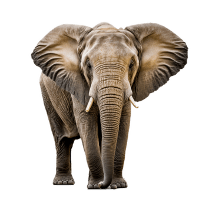

פיל

גודל
כל בני משפחת הפיליים הם בעלי חיים גדולים מאוד. משקלם הוא למעלה מ-5 טונות וגובהם למעלה מ-3 מטרים (9.8 רגל). פיל הסוואנה האפריקני הוא בעל החיים היבשתי הגדול ביותר שחי בימינו. גודלם הרב מעניק לפילים הגנה מפני כמעט כל הטורפים.
חדק הפיל
המאפיין הבולט ביותר של הפיל הוא החדק, שהוא התארכות של האף והשפה העליונה. לחדק מספר שימושים:
החדק משמש כאפו של הפיל - הפיל נושם דרך נחיריו המצויים בחדק (כמו בני האדם הוא מסוגל לנשום גם דרך פיו) וכן מריח דרכם. הפיל הוא שחיין מצוין, והוא יכול גם לשהות מתחת למים זמן רב בעת שהחדק משמש לו צינור העברה של אוויר, בדומה לשנורקל אצל צוללים אנושיים.
החדק משמש גם כמעין זרוע עבור הפיל ובאמצעותו הוא יכול לאחוז בחפצים ולהרימם, לשאתם או לדחוף אותם. החדק מורכב משרירים רבים המאפשרים חוזק וכוח מחד, וגמישות ועדינות רבה מאידך.
הבדלים בין סוגי הפילים
בין הפילים האפריקניים לפיל האסייתי ישנם מספר הבדלים חזותיים בולטים:
גודל הגוף: הפילים האפריקניים גדולים יותר ומשקלם של בוגרים זכרים עשוי להגיע גם לעשרה טון מטרי. לעומת זאת, משקלו של הפיל האסייתי מגיע לחמישה טון מטרי.
אפרכסות האוזניים גדולות יותר בקרב הפילים האפריקניים.
חטי השנהב: אצל נקבת הפיל האסייתי החטים חסרים.
חזור